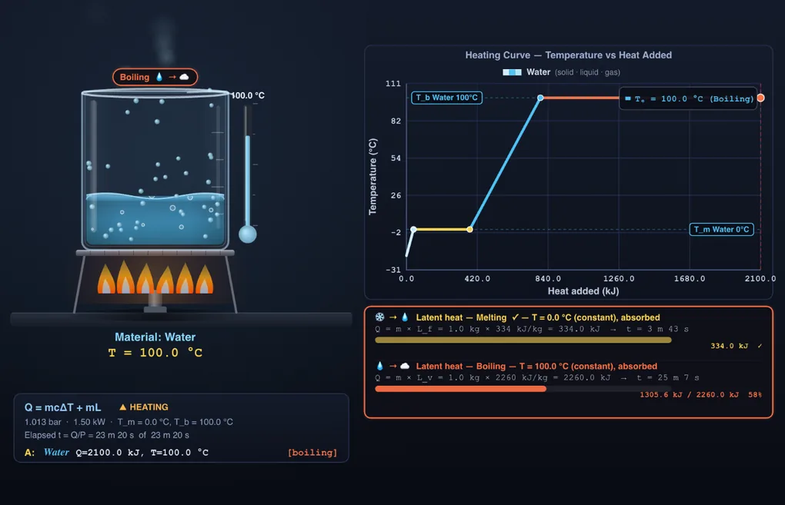

Phase Change & Latent Heat Simulator
3D Model — Phase Change & Latent Heat Simulator
Interactive phase change simulator: heating and cooling curves, latent heat Q = mL, pressure-controlled boiling point, sublimation and freeze-drying.
Q = mcΔT + mL — Solid → Liquid → Gas • Simulate • Explore • Practice • Quiz
Display Controls
Σ Live equations — energy budget and transition temperatures at the set pressure
⚖ Phase properties — molar mass, transition points, latent heats & specific heats
💡 What-if coach — insights from current values
1 Overview
The Phase Change Simulator brings the three states of matter to life. Pick one of eleven materials — water, ethanol, ammonia, carbon dioxide, mercury, lead, aluminium, iron, copper, nitrogen or oxygen — set a starting temperature, an ambient pressure and a heat input, and watch the substance travel through the full solid → liquid → gas journey. Animated particles switch from rigid lattice, to flowing liquid, to fast-moving vapour as you cross each phase boundary, and the heating curve draws the characteristic step pattern with plateaus at the transition points.
Unlike the specific-heat simulator (where temperature rises linearly), this tool uses the full energy budget Q = mcΔT + mL. During a phase change the temperature stops rising even as heat keeps flowing, because every joule goes into breaking intermolecular bonds. The tool supports single and side-by-side Material A vs B views, a Heat / Cool direction toggle for cooling curves, a pressure control that moves the boiling point and can switch the substance into sublimation, a heater power control that turns every energy figure into a time, SI/Imperial units, presets, custom materials, and the usual Simulate/Explore/Practice/Quiz modes.
2 Configuring the System
The simulator opens in Simulate mode, Single view, with Water as Material A starting at −20°C (ice), 1 kg, at 1.013 bar with a 1500 W heater. The Heat Input slider is auto-fitted to whatever is needed to carry the sample through every transition plus a short tail, and it re-fits itself whenever you change material, mass, start temperature, pressure or direction — so you can always reach the plateaus.
Press 🔥 Heat and over roughly twelve seconds you will see: ice warms from −20 to 0 °C (short sloped line); ice melts at 0 °C while a shrinking crystalline block gives way to liquid (long horizontal plateau); water heats to 100 °C (sloped line); water boils (very long plateau — vaporization takes 6.8× the fusion energy); steam rises above 100 °C (steep line, because steam has a low specific heat).
Switch to Compare A vs B in the View pill to show two beakers side-by-side — useful for showing that mercury and water behave completely differently under the same heat input.
3 Running the Cycle
The canvas shows a glass beaker on a bench, heated by a Bunsen flame (or chilled by a frosted cooling plate when the direction is set to Cool). What is inside the beaker is drawn directly from the computed phase fractions, so the picture can never disagree with the numbers: a solid appears as a faceted crystalline block, a liquid as a graded column with a meniscus, and vapour as wisps leaving the neck. During a melting plateau you see the block shrink while the liquid rises — the two phases genuinely coexist at Tm. Ice is drawn floating, because water is the anomaly whose solid is less dense than its liquid; every other material’s solid sinks.
Particles visualise the molecular picture: locked in a vibrating lattice in the solid, detached and flowing in the liquid, and escaping upward through the neck as vapour. A thermometer tracks the instantaneous reading, and a badge above the beaker names the current state or transition.
The graph panel plots the full sensible-plus-latent path. Latent segments are drawn in their own transition colour (amber fusion, orange vaporization, pink sublimation, and the cooler colours for the reverse transitions), and dashed reference lines mark Tm, Tb or Tsub at the pressure you have set. Below the graph, one banner per transition shows Q = mL with a live progress bar and, when a heater power is set, how long that plateau lasts.
4 The Underlying Theory
Explore has four categories. Phase Basics covers the three states of matter, melting and freezing, boiling and condensing, sublimation and deposition, and the triple point and phase diagram. Latent Heat teaches Q = mL, the distinction between fusion and vaporization, why Lv is so much larger than Lf, evaporative cooling, and how a latent heat is actually measured in the lab with L = Pt/m.
Curves & Pressure explains how to read the temperature-vs-heat graph, why the plateaus are flat, how their length reflects m×L, what the cooling curve looks like, how the slopes relate to 1/(mc), and how Clausius–Clapeyron sets the boiling point at any pressure. Applications covers refrigeration cycles, weather (why hurricanes are latent-heat engines), metal casting, freeze-drying, and phase-change materials in buildings. Every concept card carries a worked numeric example.
5 Try a Problem
Practice asks randomised problems drawn from fourteen generators: energy to melt or vaporize a given mass, the full ice-to-steam budget, reading Lf off a plateau, evaporative cooling of the human body, power required to vaporise a mass in a given time, how long a boiling plateau lasts at a given heater power, energy that must be removed to freeze water, calorimetry (L = Pt/m), and estimating a boiling point from pressure with Clausius–Clapeyron. Enter your numeric answer or click Show Solution for the full step-by-step derivation.
Quiz is five questions per round drawn from a pool of twenty-two, covering definitions, the values of Lf and Lv, reading a heating curve, pressure effects (Everest, pressure cookers), sublimation and the triple point, freeze-drying, and calorimetry. You receive a star rating and a per-question review at the end.
6 Features & Power Tools
Single / Compare view: The View pill at the top flips between a single material (centre-stage) and a side-by-side A vs B comparison.
Units (SI / Imperial): Every readout, slider label, axis, and modal step converts between SI (kJ, kg, °C, J/(kg·K), kJ/kg) and Imperial (BTU, lb, °F). Calculations stay in SI internally for accuracy.
Presets: One-click scenarios along the top — Ice to Steam, Melting Lead, Boiling Ethanol, Dry Ice Sublimes, Pressure Cooker, Boiling on Everest, Freeze-Drying, Liquid Nitrogen, Freezing Water, Condensing Steam, Iron Foundry, Ice vs Lead, Water vs Mercury.
Custom material: Click + Custom to add your own substance — name, melting and boiling points, molar mass, the three specific heats, and both latent heats. Every field is range-checked and stored in SI. Molar mass is required because the pressure model needs it.
Direction (Heat / Cool): Switch to Cool and the burner is replaced by a frosted chilling plate, the x-axis becomes “heat removed”, and the plateaus become condensation and freezing — same temperatures, same energies, but released instead of absorbed. The start temperature jumps to the far end of the curve automatically so the reverse run has somewhere to go.
Pressure: A logarithmic slider from 0.001 to 20 bar. The boiling point is recomputed from the Clausius–Clapeyron relation at every step, and the readout card shows the result. Drop below a material’s triple-point pressure and the liquid field closes entirely: the simulator switches to a single sublimation plateau using Lsub. Try 2 bar for a pressure cooker (about 120 °C), 0.337 bar for the summit of Everest (about 71 °C), or 0.004 bar to freeze-dry.
Heater power: 50 W to 20 kW. Every energy figure gains a companion time via t = Q/P, including the duration of each individual plateau. This is the quantity you would time with a stopwatch in a calorimetry experiment, and inverting it (L = Pt/m) is how latent heat is measured.
Start temperature: The T0 slider spans the range that is meaningful for the current material and pressure — from well below the melting point to well above the boiling point — and rescales automatically when you change either. Perfect for demonstrating “what if we start with liquid water instead of ice?”
Canvas toggles: Hide/show Flames, Particles, Graph, Equation, or enable Keep Traces to layer multiple runs onto the same chart for comparison.
Show Calculations (🔢): Opens a step-by-step modal that walks through sensible heating, melting, liquid heating, vaporization, and final-state identification with all substitutions.
Learning panels: Three collapsible cards below the readouts show the live energy budget segment by segment (with cumulative energy and elapsed time), a full property table for every material — molar mass, Tm, Tb, Lf, Lv, the Lv/Lf ratio and all three specific heats — and a what-if coach that comments on your current pressure, power and phase state.
Export: CSV of the curve sampled at 100 points, including elapsed time and phase name at each step, with the material, pressure, heater power and transition temperatures in the header. PNG exports the labelled canvas at full device resolution. Both are also on the right-click menu.
Undo / Redo: Ctrl+Z and Ctrl+Shift+Z step through recent changes.
7 Tips & Best Practices
- The longest plateau on a water heating curve is vaporization, not melting — Lv (2260 kJ/kg) is about 6.8× Lf (334 kJ/kg). This is why a kettle takes much longer to boil dry than to reach boiling.
- Steam at 100 °C contains far more energy than water at 100 °C because of the latent heat released when it condenses on your skin — that is why steam burns are so dangerous.
- Evaporation cools because the escaping molecules carry away Lv joules per kilogram. This is the physics behind sweating, clay pots that cool water, and every air conditioner ever built.
- The specific heats of the solid and liquid phase are often different: ice c = 2090 J/(kg·K), liquid water c = 4186 J/(kg·K), steam c ≈ 2010 J/(kg·K). The simulator uses the correct value for each region of the curve.
- For mercury and most pure metals, the liquid and solid specific heats are nearly equal, so the sloped sections look symmetric — only the plateau lengths carry information about Lf and Lv.
- Boiling point is a property of the pressure, not of the liquid alone. Slide the pressure down and watch Tb fall while Tm stays put — the fusion line on a P–T diagram is almost vertical, so melting points barely respond to pressure.
- Below the triple-point pressure there is no liquid at all. Water’s triple point is 6.117 mbar, so ice sublimes below that; carbon dioxide’s is 5.18 bar, which is why dry ice sublimes at ordinary atmospheric pressure and never puddles.
- Set a heater power and each plateau reports its own duration. Reading L off a stopwatch this way (L = Pt/m) is exactly the standard school calorimetry experiment.
- The boiling-point figures come from the Clausius–Clapeyron relation with a constant latent heat. Checked against steam tables the error is under about 1 °C between 0.3 and 10 bar, growing to roughly 2 °C at 0.1 bar and near the critical point, where the constant-L assumption breaks down.
- Pair this simulator with the Specific Heat Capacity Simulator (single-phase heating) and the Thermodynamics Cycles Simulator to complete your thermodynamics toolkit.
Understanding Phase Change and Latent Heat

Every time a substance changes between solid, liquid, and gas, an enormous amount of energy flows in or out without any change in temperature. That hidden energy is called latent heat, and it governs everything from the weather to your kettle, from industrial steam turbines to the liquid nitrogen in a cryogenic lab. The simulator above lets you watch the full journey unfold in real time while every joule is tracked on the heating curve.
Latent Heat and Transition Points of Common Substances
All values at 1 atm (1.01325 bar) unless noted. Latent heats are CRC/NIST molar enthalpies converted with the listed molar mass.
| Substance | M (g/mol) | Melting (°C) | Boiling (°C) | Lf (kJ/kg) | Lv (kJ/kg) | Lv/Lf | Triple point |
|---|---|---|---|---|---|---|---|
| Water | 18.02 | 0 | 100 | 334 | 2260 | 6.8 | 0.01 °C, 6.117 mbar |
| Ethanol | 46.07 | −114 | 78.4 | 108 | 855 | 7.9 | −114 °C, ~4×10−9 bar |
| Ammonia | 17.03 | −77.7 | −33.3 | 332 | 1371 | 4.1 | −77.8 °C, 60.9 mbar |
| Carbon dioxide | 44.01 | −56.6 (only above 5.18 bar) | — sublimes at −78.5 | 205 | 348 | 1.7 | −56.6 °C, 5.18 bar |
| Mercury | 200.59 | −38.8 | 356.7 | 11.4 | 294 | 25.8 | −38.8 °C, ~2×10−12 bar |
| Lead | 207.2 | 327.5 | 1749 | 23 | 871 | 37.9 | negligible pressure |
| Aluminium | 26.98 | 660.3 | 2519 | 397 | 10900 | 27.5 | negligible pressure |
| Iron | 55.85 | 1538 | 2862 | 247 | 6340 | 25.7 | negligible pressure |
| Copper | 63.55 | 1085 | 2562 | 209 | 4726 | 22.6 | negligible pressure |
| Nitrogen | 28.01 | −210 | −195.8 | 25.7 | 199 | 7.7 | −210 °C, 125 mbar |
| Oxygen | 32.00 | −218.8 | −183 | 13.9 | 213 | 15.3 | −218.8 °C, 1.46 mbar |
Boiling Point of Water vs Pressure
Boiling occurs when a liquid’s saturated vapour pressure equals the pressure pressing down on it, so the boiling point is set by the surroundings, not by the liquid alone. The values below are what the simulator computes from the Clausius–Clapeyron relation, alongside the steam-table figures.
| Pressure | Where you meet it | Boiling point (steam tables) |
|---|---|---|
| 0.001 bar | Freeze-dryer chamber | ice sublimes near −20 °C |
| 0.1 bar | Vacuum evaporator | 45.8 °C |
| 0.337 bar | Summit of Everest (8848 m) | ~71 °C |
| 0.64 bar | La Paz, Bolivia (3640 m) | ~88 °C |
| 0.84 bar | Denver, USA (1600 m) | ~94 °C |
| 1.013 bar | Sea level | 100 °C |
| 2 bar | Domestic pressure cooker | 120.2 °C |
| 5 bar | Autoclave / low-pressure boiler | 151.8 °C |
| 10 bar | Industrial steam boiler | 179.9 °C |
The Energy Budget: Q = mcΔT + mL
To heat a substance from well below its melting point to well above its boiling point, the total energy is the sum of five separate contributions: (1) sensible heat in the solid phase, m·cs·ΔT; (2) latent heat of fusion, m·Lf; (3) sensible heat in the liquid phase, m·cl·ΔT; (4) latent heat of vaporization, m·Lv; (5) sensible heat in the gas phase, m·cg·ΔT. The graph in the simulator shows all five as alternating slopes and plateaus, with the plateau lengths scaling with m·L.
Pressure, the Triple Point and Why Dry Ice Never Puddles
The melting point and the boiling point behave very differently under pressure. On a pressure–temperature phase diagram the fusion line is almost vertical — melting points shift by only hundredths of a degree per bar — while the vaporization line is steeply curved, so the boiling point moves tens of degrees over the same range. The Clausius–Clapeyron relation quantifies it:
1 / T2 = 1 / T1 − (R / LvM) · ln(P2 / P1)
The two lines meet at the triple point, the single pressure and temperature at which solid, liquid and vapour coexist. Below the triple-point pressure the liquid field has closed completely and a heated solid must go straight to vapour. Water’s triple point is 0.01 °C at 6.117 mbar, which is why ice sublimes in a freeze-dryer. Carbon dioxide’s triple point sits at −56.6 °C and 5.18 bar — five times atmospheric — so at ordinary room pressure solid CO2 has no liquid state available and sublimes at −78.5 °C. That is the whole reason dry ice leaves no puddle. Push the simulator’s pressure slider above 5.18 bar and carbon dioxide starts melting like any other solid.
Measuring Latent Heat: L = Pt / m
Latent heat is measured, not looked up. Supply a known electrical power P to a sample sitting on its plateau, time how long t the temperature holds steady, and every joule delivered in that interval went into the phase change: Q = Pt, so L = Pt / m. A 500 W immersion heater melting 0.2 kg of ice holds at 0 °C for about 134 seconds, giving Lf = 500 × 134 / 0.2 = 335 000 J/kg. Set a heater power in the simulator and each plateau reports exactly this duration, which makes the tool a dry run for the experiment.
Cooling Curves: the Same Energy, Flowing the Other Way
Run the process in reverse and you get the cooling curve. The plateaus appear at identical temperatures and consume identical energies, but the latent heat is now released to the surroundings rather than absorbed. This is why a freezing pond holds at 0 °C for a long time, why condensing steam in a power-station condenser dumps enormous heat into the cooling water, and why a solidifying casting must have that same Lf pulled back out through the mould before it can cool further. Switch the direction toggle to Cool to watch it happen.
Why Temperature Stays Constant During a Phase Change
Temperature measures the average kinetic energy of molecules. During melting or boiling, every joule of heat goes into breaking the intermolecular bonds (hydrogen bonds for water, metallic bonds for iron, van der Waals for noble gases) that hold the current phase together. Once all the bonds for a given phase are broken, the molecules can finally move more freely and the temperature starts rising again. This is why ice-water mixtures sit at exactly 0 °C until the last ice cube is gone, and why a rolling boil stays at 100 °C no matter how hard you crank the stove.
Where Latent Heat Matters
Latent heat powers refrigeration and air conditioning (a working fluid evaporates inside the cold coil, absorbing Lv, and condenses outside, releasing it). It drives weather (hurricanes are latent-heat engines — warm ocean water evaporates, releases Lv when it condenses at altitude, and that released energy drives the storm). It enables steam power plants, metal casting foundries, cryogenic medicine, evaporative cooling towers, and phase-change materials that buffer temperature swings in buildings and spacecraft.
Who Uses This Simulator?
This simulator is designed for high-school physics and chemistry students, first-year engineering students, HVAC trainees, and teachers who need a visual way to demonstrate that a phase change is not just a colour swap but a genuine energy transaction. The pressure control makes it equally useful for HVAC and refrigeration trainees learning why a compressor sets the evaporating and condensing temperatures, for food-technology and pharmaceutical students studying freeze-drying, and for materials-engineering students working on casting, soldering and heat treatment. The heater-power control turns it into a rehearsal for the standard calorimetry lab.
Explore Related Simulators
If you found this phase change simulator helpful, explore our Specific Heat Capacity Simulator, Thermal Expansion Simulator, Heat Transfer Simulator, Refrigeration Cycle Simulator, and Thermodynamics Cycles Simulator for more hands-on practice.
Enter realistic positive values. Boiling point must exceed melting point. Molar mass is used by the Clausius–Clapeyron pressure model; a custom material is assumed to have a negligible triple-point pressure, so it will melt rather than sublime at any pressure on the slider.